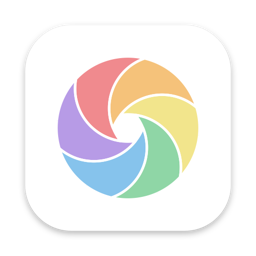

ColorSense
Point your camera at something and know what color it is.
Identify
- A name for the color under the ring, from a list of 30,000, plus its basic color family
- Hex, RGB, HSL and CMYK values, one tap to copy
- Hold a reading still and save it to a palette
- Contrast against white and black text, with WCAG AA and AAA results
Color blindness
- See the camera the way someone with deuteranopia, protanopia or tritanopia does
- Enhance shifts colors that look the same so you can tell them apart
- Works with VoiceOver and TalkBack, larger text, and never relies on color alone
Match and palettes
- Pick two colors and get a harmony score and their contrast ratio
- Save colors into palettes, generate palettes from a seed color, and share them with a link
- Keep a palette on your iPhone Home Screen with a widget
One account, every device
Sign in with your email, no password needed. Your palettes and ColorSense Pro follow you to every device where you use the same email, whichever store you bought Pro from.
iPhoneCamera, widgets, Lock Screen
iPadCamera and palettes
MacMenu bar color picker
Apple WatchPalettes on your wrist
AndroidCamera, photos and palettes
Wear OSPalettes on your wrist
Price
ColorSense is free to use. ColorSense Pro adds unlimited palettes and colors, Match, Enhance and extra color details, as a weekly or yearly subscription with a free trial. It renews until you cancel in your App Store or Google Play account settings.